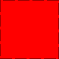

Test post, let's draw stuff
Posted on March 27, 2017
Just a test post to see if things work
> example1 :: Diagram B
> example1 = square 1 # fc red
> # lw veryThick
> # lc black
> # dashingG [0.2,0.05] 0Diagram from above : 
Or from some library :
> out11 = example11 :: Diagram Bwhich means we can go deep with some project, using standard tools, and then provide a good summary of the artefact it can produce